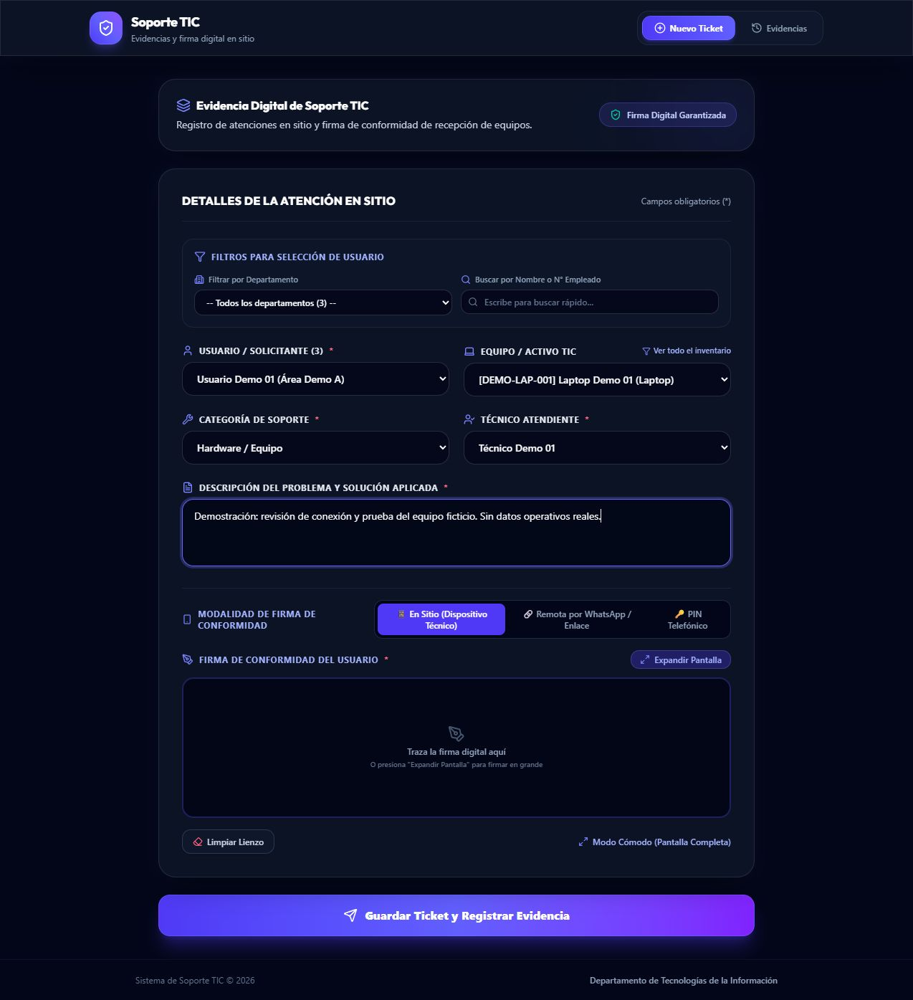

EXPERIENCIA COMPLEMENTARIA · EJEMPLO SINTÉTICO
Registros TIC
Escenario ficticio de creación, seguimiento e informe de tickets con historial local.
Problema operativo
Reunir incidencias de soporte, activos, solicitantes y conformidad en un único flujo móvil trazable.
Solución técnica
Aplicación web React/TypeScript con catálogos relacionados, atenciones, historial y demostración saneada.
Tecnologías observadas
- React
- TypeScript
- Supabase
- PostgreSQL
- PWA
Ejemplo reproducible
Entrada: Cinco tickets ficticios con estados, eventos de seguimiento y categorías de reporte.
Resultado: Historial e informe se recalculan desde la fixture local de cinco tickets.
Decisión técnica: Tratar el historial como eventos del ejemplo y separar el estado de reporte; no afirmar persistencia ni integración remota.
Evidencia verificable
El verificador comprueba cinco registros sintéticos, claves, estados, historial y conteos del informe.

Alcance, límites y próximos pasos
El modelo de ejemplo es independiente; no prueba funciones actuales de la aplicación, autenticación ni sincronización remota.
No se atribuyen métricas cuantitativas no medidas ni autoría exclusiva de componentes no acreditados. El repositorio documenta la aportación verificada y sus límites.
Comprobación reproducible: python examples/verify.py
Ver repositorio y documentación técnica (abre en otra pestaña) ↗
Leer caso de estudio completo en GitHub (abre en otra pestaña) ↗